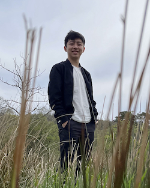

Nicholas Teh
PhD Student
University of Oxford
Department of Computer Science
nicholas.teh [at] cs.ox.ac.uk
Hello there!
I'm Nicholas, a second-year PhD (DPhil) student in Computer Science at the University of Oxford, supervised by Edith Elkind. I'm broadly interested in algorithmic game theory, mechanism design, and multi-agent systems.
I completed my undergraduate degrees in Computer Science and Applied Mathematics at the National University of Singapore (2017 - 2021), where I worked with Yair Zick, Jonathan Scarlett and Harold Soh. My undergraduate thesis in Math delved into individual and group fairness in the allocation of indivisible goods (for which I was awarded the Lijen Industrial Development Medal for best Honours project), whereas my thesis in Computer Science established a game-theoretic framework for large-scale human-robot interaction.
Publications / Working Papers
-
Weighted Envy-Freeness for Submodular Valuations
Luisa Montanari, Ulrike Schmidt-Kraepelin, Warut Suksompong, Nicholas Teh
PP Preprint [ ]
]
-
For One and All: Individual and Group Fairness in the Allocation of Indivisible Goods
Jonathan Scarlett, Nicholas Teh, Yair Zick
S-2 22nd International Conference on Autonomous Agents and Multiagent Systems (AAMAS) 2023 [To Appear]
-
Fairness in Temporal Slot Assignment
Edith Elkind, Sonja Kraiczy, Nicholas Teh
C-2 15th International Symposium on Algorithmic Game Theory (SAGT) 2022 [ ]
]
-
Better Collective Decisions via Uncertainty Reduction
Shiri Alouf-Heffetz, Laurent Bulteau, Edith Elkind, Nimrod Talmon, Nicholas Teh
C-1 31st International Joint Conference on Artificial Intelligence (IJCAI) 2022 [ | ]
-
On Maximum Weighted Nash Welfare for Binary Valuations
Warut Suksompong, Nicholas Teh
J-1 Mathematical Social Sciences, Volume 117, May 2022, Pages 101-108 [ | ]
-
A Theoretical Framework for Large-Scale Human-Robot Interaction with Groups of Learning Agents
Nicholas Teh, Hu Shuyue, Harold Soh
S-1 ACM/IEEE International Conference on Human-Robot Interaction (HRI) 2021 [ ]
Legend: J Journal Paper C Conference Full Paper S Conference Short Paper
Teaching
University of Oxford, Department of Computer Science
- Computational Game Theory Class TA HT22 HT23
- Artificial Intelligence Class TA HT22 HT23
- Group Design Practical Internal Mentor HT23
- Law and Computer Science Course Administrator MT21 HT22
National University of Singapore, Department of Computer Science
- CS3243 Introduction to Artificial Intelligence Head TA Spr20 Sum20 Fall20 Spr21 Sum21
- CS2040 Data Structures and Algorithms TA Fall18 Spr19 Spr20
- CS2030 Programming Methodology II TA Spr18
- CS1010 Programming Methodology Head TA Fall20
- CS1231 Discrete Structures TA Spr21
Teaching Awards
- NUS School of Computing Undergraduate Teaching Excellence Award (AY 2019 - 2020)
- NUS School of Computing Undergraduate Teaching Excellence Award (AY 2018 - 2019)
Other Involvements
- [Nov 2022 - ] President, 180 Degrees Consulting (Oxford)
- [Sep 2020 - ] Member (Civic Participation), Mechanism Design for Social Good
- [Apr 2022 - Nov 2022] Recruitment & Finance Director, 180 Degrees Consulting (Oxford)
- [Jan 2021 - Apr 2022] Community Engagement (APAC), Mechanism Design for Social Good
- [Aug 2020 - May 2021] Student Ambassador (Outreach), NUS School of Computing
- [Apr 2019 - Apr 2021] Director of Infocomm Technology, Mensa Singapore
- [Conferences] IJCAI 2023 (Assistant Workflow Chair)
- [Program Committee] GAIW 2021, GAIW 2022, AAMAS 2023 (Blue Sky Track)
- [Sub-Reviewer] AAMAS 2022, EC 2022, SAGT 2022, AAMAS 2023